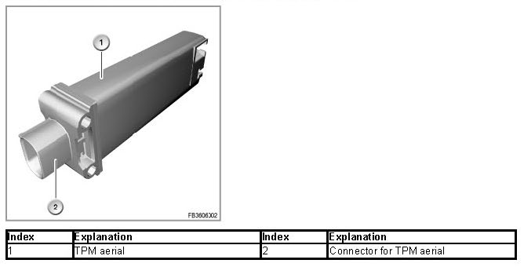
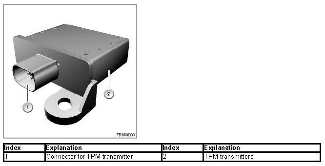
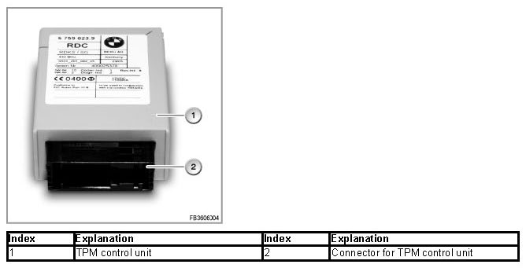
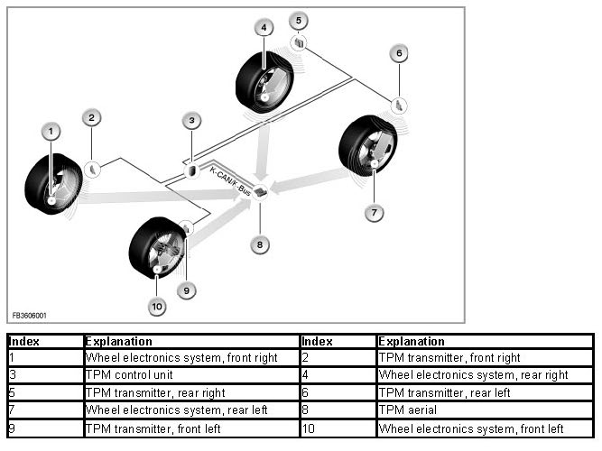

Tire Pressure Monitor (TPM)
Tire Pressure Monitor (TPM)
Tire Pressure Monitor
The Tire Pressure Monitor (TPM) is a system for monitoring the tire inflation pressure while the vehicle is being driven. To achieve this, the tire inflation pressure and tire air temperature are measured at certain intervals at the request of the TPM control unit and telemetrically transmitted across an HF transmission path to the TPM aerial. The TPM aerial feeds the signals back across the bus to the TPM control unit. The control unit evaluates the received data. If required, it forwards the information to the driver. The driver is thus informed of a necessary correction of tire inflation pressure or a puncture that might have occurred.
Brief description of components
The following components are described for the TPM:
TPM aerial
The TPM aerial is generally located on the underbody. Depending on the model series, the position can be in the front area (cross-member of A-pillar) or in the central area of the underbody.

TPM transmitters
The 4 TPM transmitters are fitted under the wheel arch trim in the wheelhouses. The TPM transmitters send the requests from the control unit to the wheel electronics systems. This achieves bidirectional communication.

Wheel electronics systems in the running wheels and/or in the spare wheel
The wheel electronic systems are mounted in the wheel drop centre. Together with the filling valve, they form a compact unit and are fitted in the same way as a screw valve in the rim. The wheel electronics system contains:
- pressure sensor
- temperature sensor
- Transverse acceleration sensor
- Battery
- A transmission and reception aerial
The wheel electronics system is activated on initial fill of the tire. The measured values are transmitted from the wheel electronics system either on request or cyclically (every 3 seconds) from the tire to the TPM aerial. This cycle is temporarily shortened if a certain pressure change is detected. In the case of temperature values greater than 120 °C inside the tire, the wheel electronic system is switched off; if it cools down to less than 110 °C, it is switched on again.
Transmission rate normal: 54 s
Transmission rate increased: 0.8 s
Battery service life: approx. 10 years.
TPM control unit
The TPM control unit evaluates the transmitted pressure and temperature values from the individual tires. If required, a Check Control message in the instrument cluster notifies the driver. This signal may also be supported by supplementary information via the Control Display.

System functions
The following system functions are described for the TPM:
- Overall function
- Resetting the TPM

Overall function
The TPM monitors the tire inflation pressure while the vehicle is being driven. The tire pressure to be monitored is specified by the driver. Using the control function in the iDrive or the TPM button, the driver instructs the system to adopt the current tire pressure as setpoint pressure (reset). The plausibility of the setpoint pressure is checked before the TPM control unit adopts it (axle-wise comparison of the specified pressures, minimum pressures). A reset is only possible when the tire inflation pressure on all wheels is at least 1.6 bar. If the tire pressure of one wheel falls below this limit, a Check Control message is issued immediately. If the pressure difference between the wheels on one axle greater than 0.4 bar, the reset is rejected following a plausibility check. A Check Control message is output. Remedy: set tire pressures to the correct values and then run the reset once again.
Internal sequence after triggered adaptation process (reset):
1. Recognition of the fitted wheel electronics systems
2. Identifying of the position of the wheel electronics systems
3. Plausibility check by checking the specified pressures
4. Adoption of the specified pressures as setpoint pressures
On comparison of the current tire pressure with the specified pressure, the air temperature is taken into account. On the basis of the specified pressure and temperature during the reset, the TPM calculates the limit values for the tire inflation pressure for the current air temperature. The tire inflation pressure increases by 0.1 bar per 10 °C increase in temperature. If the temperature-evaluated values are not reached, the TPM issues a Check Control message.
Resetting the TPM
In the case of vehicles without iDrive, the TPM is reset using a button in the centre console switch centre. This TPM button must be pressed for 4 seconds. On vehicles with iDrive, the TPM is reset via the menu item:
Settings/Vehicle/TPM/Reset. In general, the reset can be carried out with the ignition on or engine on (only when vehicle is stationary).
Notes for Service department
Diagnosis instructions
IMPORTANT: Conditions for reset.
The TPM must be reset in the following cases:
- The tire inflation pressure is changed.
- A wheel exchange is carried out. The exchanged wheels must be equipped with the correct wheel electronics systems.
- Axle-wise wheel exchange on the vehicle.
- Diagnosis instruction
NOTE: Check of the wheel electronics system
A check as to whether the correct wheel electronics system has been fitted can only by run after the tire has been removed. Unfortunately, a query via the BMW diagnosis system is not possible for technical reasons.
NOTE: Reset of the TPM control unit
During the reset, the control unit functions (measurement data of wheels 1-5) contain substitute values until the wheel allocation is complete (e.g. 6.4 bar; 127 °Celsius). To enable successful conclusion of the wheel allocation, the wheels must turn.
Country-specific versions
USA, Canada
Transmission frequency of the system: 433 MHz
Reception frequency of the system: 125 MHz
No liability can be accepted for printing or other errors. Subject to changes of a technical nature